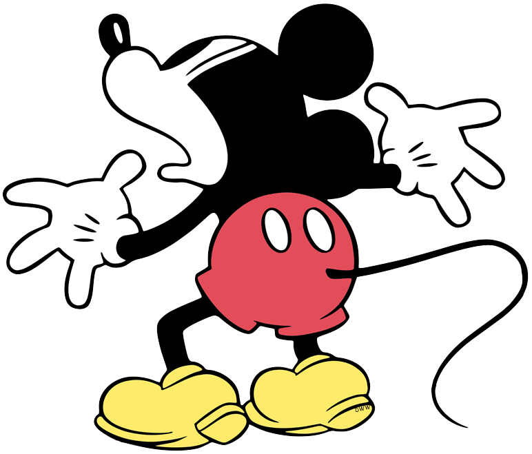
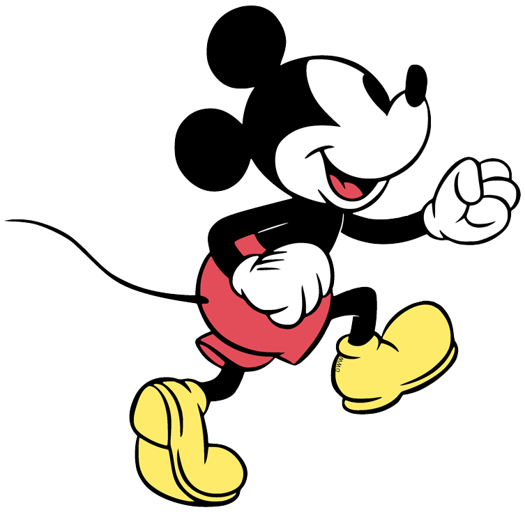

Mode:
Calm
Instructions:
Click the button or press the
C
key. Open Console to see logs.
Console Key Test
This adds a console listener if you want an extra test.
the quick brown fox jumps over the lazy dog